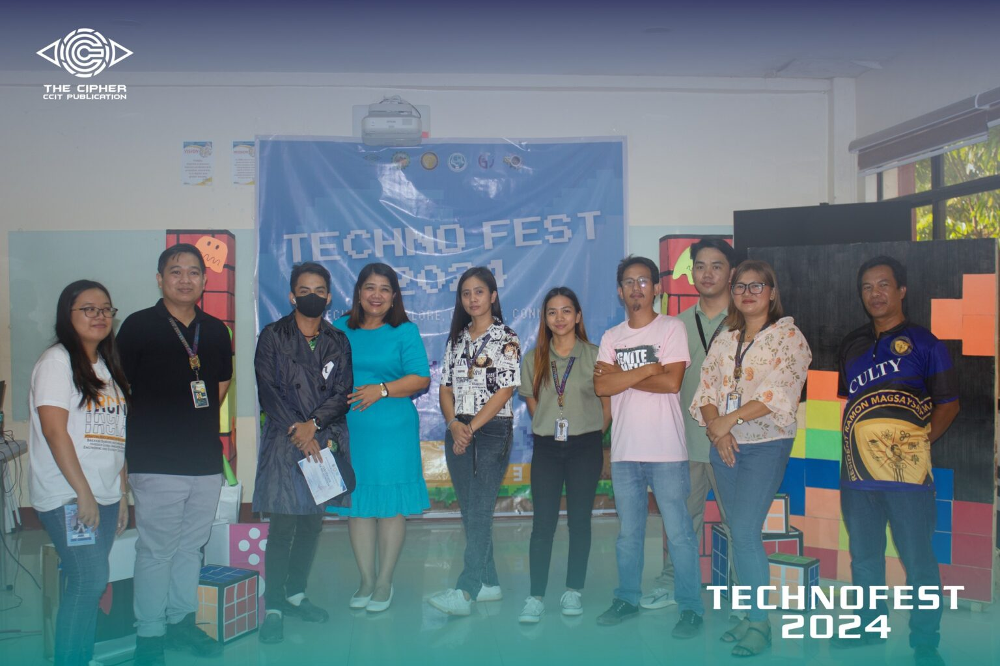
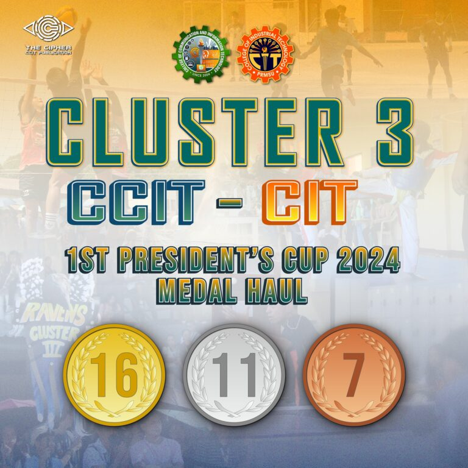

John David Tabigne of BS Computer Science 4A won the recently concluded 34th National Statistics Month Infographic Making Contest with the theme: “Accelerating Progress: Promoting Data and Statistics for Healthy Philippines”.The said contest was held by the Philippine Statistics Authority, with the Awarding Ceremony held at PRMSU College of Teacher Education.
NEWS|Techtrek:
Explore,Compete
and Connect
April 24,2024 / By Marionne Joyce Tapado

EXPLORING their fields of expertise, the participants go to a heated battle to prove their determination to clinch the championship. While COMPETING with each other might sound intense, it became a way to CONNECT CCIT students with the same goal and talents at one stage.Students, participants, as well as the faculty and staff of CCIT, all gathered at the Audio Visual Room, CCIT Computing and Technology Building, on April 18, 2024, to witness the awarding of certificates and the presentation of winners in each competition. Moreover, the Techno Festival comes to an end, with an experience that will not be forgotten.
NEWS|CLUSTER 3:
EARNS MEDAL IN
1st PRESIDENT'S CUP
April 24,2024 / By Marionne Joyce Tapado

From March 5 to 7 last week, the combined cluster of student athletes of the College of Communication and Information Technology (CCIT) and the College of Industrial Technology (CIT) earned a total of 34 medals, 16 gold, 11 silver, and 7 bronze, across a variety of sports combating different college clusters and PRMSU campuses.